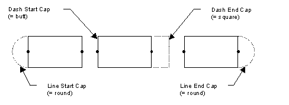

Purpose
| Opcode format | Opcode [ASCII](Hex) | Operand Format | Comments |
| Extended ASCII | (LineStyle | [<ws>(AdaptPatterns<ws><TBoolean>[<ws>])]\
[<ws>(LinePatternScale<ws><FScale>[<ws>])]\ [<ws>(LineStartCap<ws><TCap>[<ws>])]\ [<ws>(LineEndCap<ws><TCap>[<ws>])]\ [<ws>(DashStartCap<ws><TCap>[<ws>])]\ [<ws>(DashEndCap<ws><TCap>[<ws>])]\ [<ws>(LineJoin<ws><TJoin>[<ws>])]\ [<ws>(MiterAngle<ws><IAngle>[<ws>])]\ [<ws>(MiterLength<ws><ILength>[<ws>])]) |
Select the type of line style from the supplied description. |
Scale Float The multiplication factor to be applied to the pattern
Cap ASCII text string Describes how ends of thick lines should be rendered
Join ASCII text string Describes how the joints of multi-segment thick polylines are rendered
Angle Integer The angle (measured in 360/65636ths of a degree) at which adjoining line segments are mitered
Length Integer The multiplier applied to the line width to determine the miter length
The Adaptive Patterns opcode specifies how a WHIP! data viewing application adjusts a line pattern length so that each line contains one or more complete pattern.
The Line Join opcode specifies how the joints of subsequent thickened multi-segment polylines are rendered. These are shown in figure 1.

Figure 2. Line Caps
square A square line end-cap where the line terminates one-half line width beyond its endpoint
round A round line end-cap where the line terminates in a semicircle with a diameter equal to the current line width
diamond A diamond line end-cap where the line terminates one-half line width beyond its endpoint
Miter terminology includes:
round A join formed by an arc with a diameter equal to the current line width
diamond A join formed by two lines extending from the outer edge of each line segment to a point 1/2 line width beyond the end intersection of the line segments